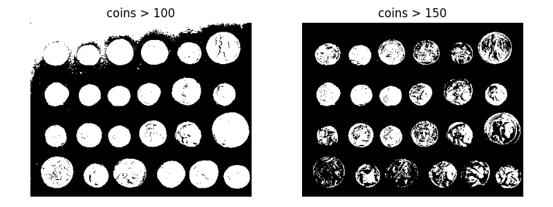
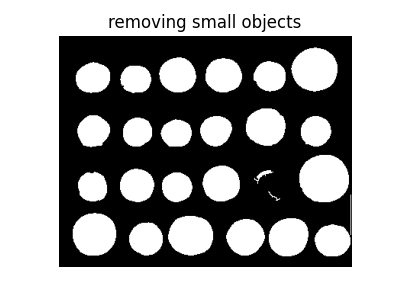
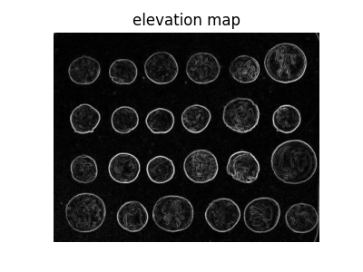

11.1. Image Segmentation#
Image segmentation is the task of labeling the pixels of objects of interest in an image.
In this tutorial, we will see how to segment objects from a background.
We use the image from skimage.data.coins(). This image shows
several coins outlined against a darker background. The segmentation of
the coins cannot be done directly from the histogram of gray values,
because the background shares enough gray levels with the coins that a
thresholding segmentation is not sufficient.
>>> from skimage.exposure import histogram
>>> coins = ski.data.coins()
>>> hist, hist_centers = ski.exposure.histogram(coins)
Simply thresholding the image leads either to missing significant parts of the coins, or to merging parts of the background with the coins. This is due to the inhomogeneous lighting of the image.
A first idea is to take advantage of the local contrast, that is, to use the gradients rather than the gray values.
11.1.1. Edge-based segmentation#
Let us first try to detect edges that enclose the coins. For edge
detection, we use the Canny detector of skimage.feature.canny()
>>> edges = ski.feature.canny(coins / 255.)
As the background is very smooth, almost all edges are found at the boundary of the coins, or inside the coins.
>>> import scipy as sp
>>> fill_coins = sp.ndimage.binary_fill_holes(edges)
Now that we have contours that delineate the outer boundary of the coins,
we fill the inner part of the coins using the
scipy.ndimage.binary_fill_holes() function, which uses mathematical morphology
to fill the holes.
Most coins are well segmented out of the background. Small objects from
the background can be easily removed using the ndi.label
function to remove objects smaller than a small threshold.
>>> label_objects, nb_labels = sp.ndimage..label(fill_coins)
>>> sizes = np.bincount(label_objects.ravel())
>>> mask_sizes = sizes > 20
>>> mask_sizes[0] = 0
>>> coins_cleaned = mask_sizes[label_objects]
However, the segmentation is not very satisfying, since one of the coins has not been segmented correctly at all. The reason is that the contour that we got from the Canny detector was not completely closed, therefore the filling function did not fill the inner part of the coin.
Therefore, this segmentation method is not very robust: if we miss a single pixel of the contour of the object, we will not be able to fill it. Of course, we could try to dilate the contours in order to close them. However, it is preferable to try a more robust method.
11.1.2. Region-based segmentation#
Let us first determine markers of the coins and the background. These markers are pixels that we can label unambiguously as either object or background. Here, the markers are found at the two extreme parts of the histogram of gray values:
>>> markers = np.zeros_like(coins)
>>> markers[coins < 30] = 1
>>> markers[coins > 150] = 2
We will use these markers in a watershed segmentation. The name watershed comes from an analogy with hydrology. The watershed transform floods an image of elevation starting from markers, in order to determine the catchment basins of these markers. Watershed lines separate these catchment basins, and correspond to the desired segmentation.
The choice of the elevation map is critical for good segmentation. Here, the amplitude of the gradient provides a good elevation map. We use the Sobel operator for computing the amplitude of the gradient:
>>> elevation_map = ski.filters.sobel(coins)
From the 3-D surface plot shown below, we see that high barriers effectively separate the coins from the background.

and here is the corresponding 2-D plot:
The next step is to find markers of the background and the coins based on the extreme parts of the histogram of gray values:
>>> markers = np.zeros_like(coins)
>>> markers[coins < 30] = 1
>>> markers[coins > 150] = 2
Let us now compute the watershed transform:
>>> segmentation = ski.segmentation.watershed(elevation_map, markers)
With this method, the result is satisfying for all coins. Even if the markers for the background were not well distributed, the barriers in the elevation map were high enough for these markers to flood the entire background.
We remove a few small holes with mathematical morphology:
>>> segmentation = sp.ndimage.binary_fill_holes(segmentation - 1)
We can now label all the coins one by one using ndi.label:
>>> labeled_coins, _ = sp.ndimage.label(segmentation)